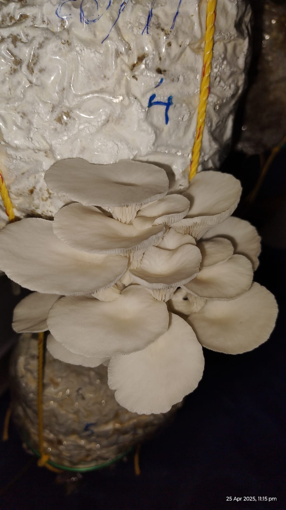
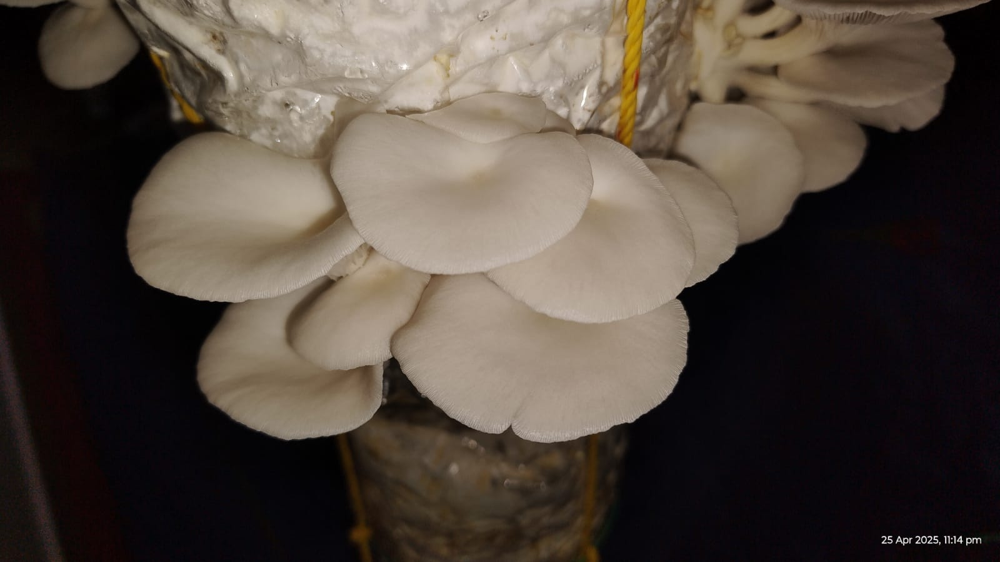
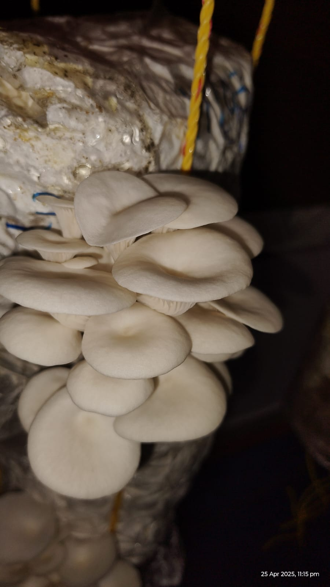
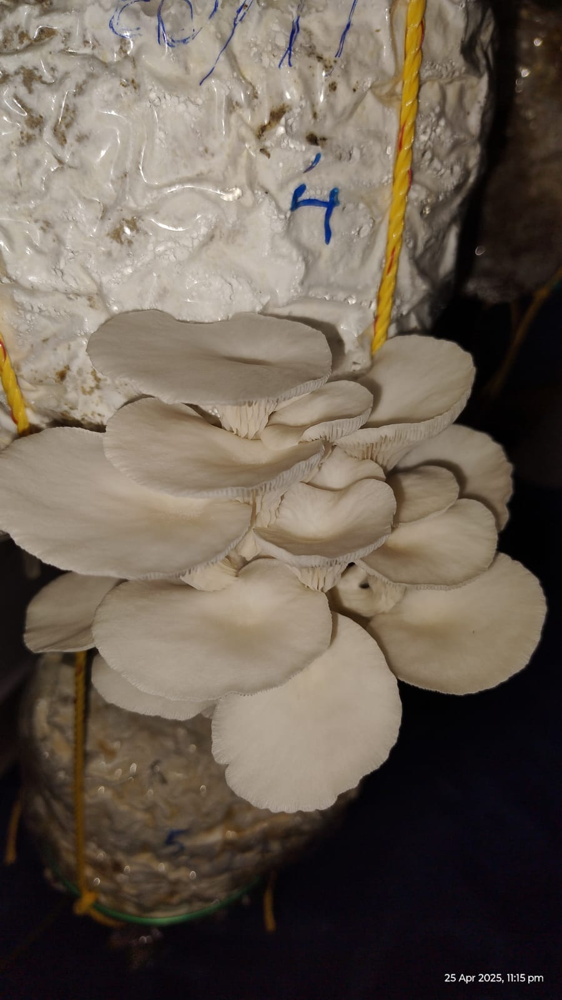
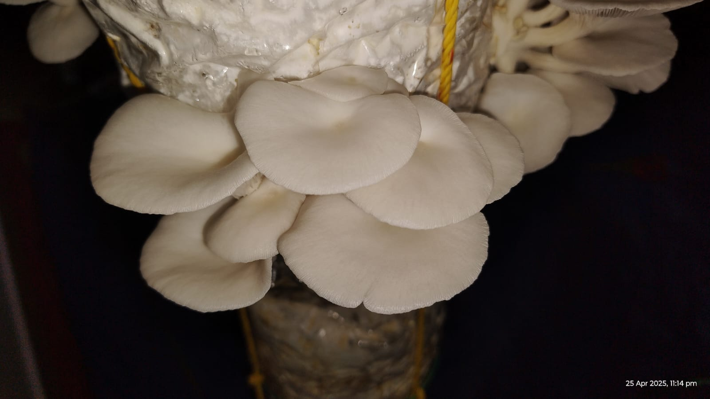
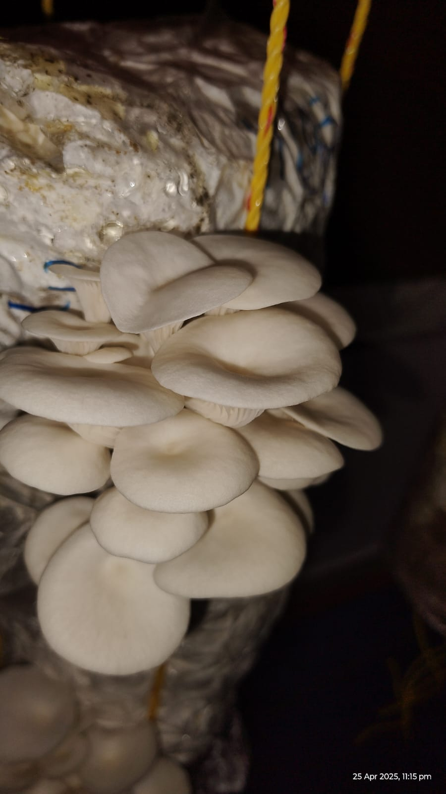

Our Mission
To provide fresh, safe, and eco-friendly mushrooms grown with care right at home. We avoid chemicals and focus on sustainable farming methods.
Our Farm Gallery


 







Why Choose Tayyib Crops?
- Proudly grown locally
- No pesticides or chemicals
- Hand-harvested with care
- Picked fresh daily
- Vegan & gluten-free
- Eco-friendly farming